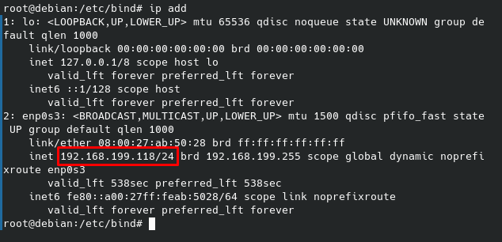

1. Penjelasan
DNS server merupakan metode mentranslate IP menjadi domain, dimana diterapkan di internet seperti
website.DNS Server ini sudah kita pakai dalam kehidupan sehari-hari seperti akseses facebook.com,
keuntungan DNS Server adalah kita tidak harus menghafal IP untuk mengakases website, bayangkan jika
ada 10 IP mungkin kita bisa mengingat tapi bagaiman ada 100 atau 1000 lebih, akan sulit
mengingatnya.
2. Konfigurasi Repository&Install Bind9
Untuk konfigurasi DNS Server kita harus install service bind9.
Seblumnya kita harus mengarah repository online, menggunakan command “nano /etc/apt/source.list”.
Repository yang saya gunakan adalah milik Debian langsung
Selanjutnya kita install service bind9, pastikan kalian sudah bisa ping google.com ya.
setelah bind9 berhasil dinstall, selanjutnya kita akan konfigurasi file yang berada pada /etc/bind/.
Yang akan kita rubah pada named.conf.local, forward dan reversenya.
3. Konfigurasi Zone
Pertama kita konfiggurasikan named.conf.local dulu, untuk command nya “cd /etc/bind/” lalu “nano
named.conf.local”
Diatas terdapat 2 zone, pertama digunakan untuk domain dan file mengarah ke file forward dan untuk
zone ke 2 adalah digunakan untuk translate ip jadi domain, file mengarah ke reverd
Pada zone ke 168.192 adalah ip awal yang ada pada server. Kalian bisa perhatikan pada gambar yang
menampilkan IP Address dibawah ini.

4. Konfigurasi File Forward&Reverse
Lalu kita buat file forward dan file reverse, dengan cara copy file yang sudah di sedikan ketika kita
berhasil install bind9.Kalian perhatikan file db.local untuk file Forward dan File db.127 untuk File
reverse
Oke kita konfigurasikan file forward terlebih dahulu
Pada gambar diatas kita hanya mendefinisikan domain dan ip untuk domain
Oke selanjutnya kita akan konfigurasi file reverse, yaitu file 192
Untuk konfigurasi reverse nya seperti diatas, dimana kita definisikan domain dan IP. Untuk IP kita
balik penulisannya, jadi akan di tulis 118.199.168 dari 192.168.199.118, perhatikan pada IP bahwa
file reverse 192 nya tidak ada, kenapa tdak ditulis ? karena 192 sudah ditulis di named.conf.local
Selanjutnya kita wajib restart service bind9. Dan juga kita cek apakah domain kita sudah berjalan
atau belum.
Perhatikan pada gambar diatas kita restart service named bukannya bind9, tidak usah bingung karena
named adalah nama lain dari service bind9. Setealah kita coba dengan nslookup ke domain dan
juga ke IP belum bisa, IP yang ditampilkan masih salah seharusnya Ketika kita nslookup
menggunakan domain harusnya yang muncul IP nya 192.168.199.118.
5. Konfigurasi File Resolv
Bagaimana agar domain nya bisa berjaalan ? solusi akan masalah ini adalah kita harus menggunakan dns
yang telah kita buat sebelumnya pada os kita.Command yang kita gunakan adalah “nano
/etc/resolv.conf”
Pada gambar diatas kita disabled dns kearah google dengan memberi tanda #, dan dibawah kita tambahkan
“nameserver 192.168.199.118” mengarah ke dns server kita.
6. Verify domain
Selanjutnya kita verfikasi dengan menggunakan nslookup. Hasil dari dns kita arahkan ke local kita